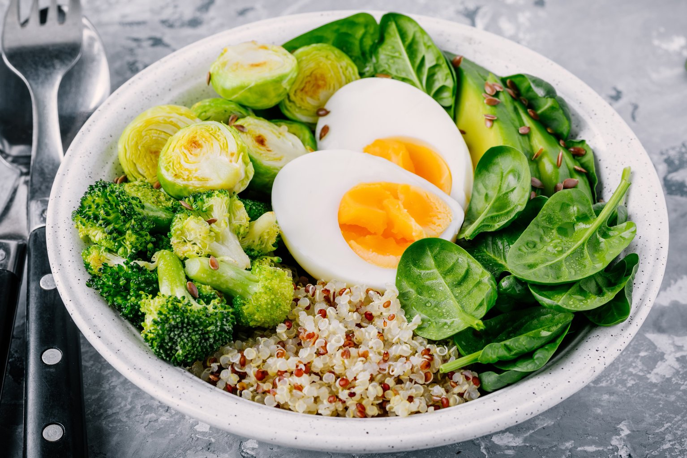

Vegetarianism is the practice of abstaining from the consumption of meat (red meat, poultry, seafood, and the flesh of any other animal), and may also include abstention from by-products of animal slaughter
Vegetarianism may be adopted for various reasons. Many people object to eating meat out of respect for sentient life.
Such ethical motivations have been codified under various religious beliefs, as well as animal rights advocacy.
Other motivations for vegetarianism are health-related, political, environmental, cultural, aesthetic, economic, or personal preference
1. Reduce risk of Heart Disease.
2. Cancer prevention.
3. Lose excess weight and keep it off.
4.Live longer, slow the aging process.
5. Avoid toxic food contaminants.
6. Reduce Global Warming.
9. Have compassion for animals.
10. Enjoy the diverse, colorful, and delicious world of vegetarian cuisine.
The results of an evidence-based review showed that a vegetarian diet is associated with a lower risk of death from ischemic heart disease.
Vegetarians also appear to have lower low-density lipoprotein cholesterol levels, lower blood pressure, and lower rates of hypertension and type 2 diabetes than non-vegetarians.
Furthermore, vegetarians tend to have a lower body mass index and lower overall cancer rates.
